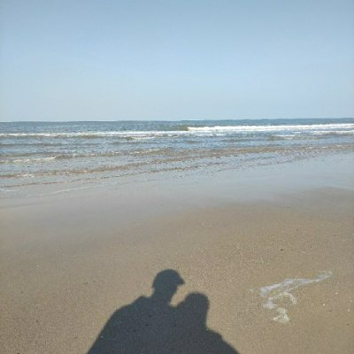

☯️🧬霊狐製作所 公式ツイッター
@Cheese_Ghostfox
RT @aehyok: 伙伴们，国庆假期玩的开森了嘛
就在刚刚，我刷到一个 6B 的国产开源模型，感觉它给图片精修提供了一个完全不同的思路。
它所在的 Ming-Image-0.1-Design 系列，一出来就在 AA 的 UI/UX Design 开源评测里冲到了第一梯队…

AI少年
@aehyok
伙伴们，国庆假期玩的开森了嘛
就在刚刚，我刷到一个 6B 的国产开源模型，感觉它给图片精修提供了一个完全不同的思路。
它所在的 Ming-Image-0.1-Design 系列，一出来就在 AA 的 UI/UX Design 开源评测里冲到了第一梯队。
但真正让我感兴趣的，不是它直接生成图片。而是：它能拆图。 https://t.co/tbUiR8Fg9t